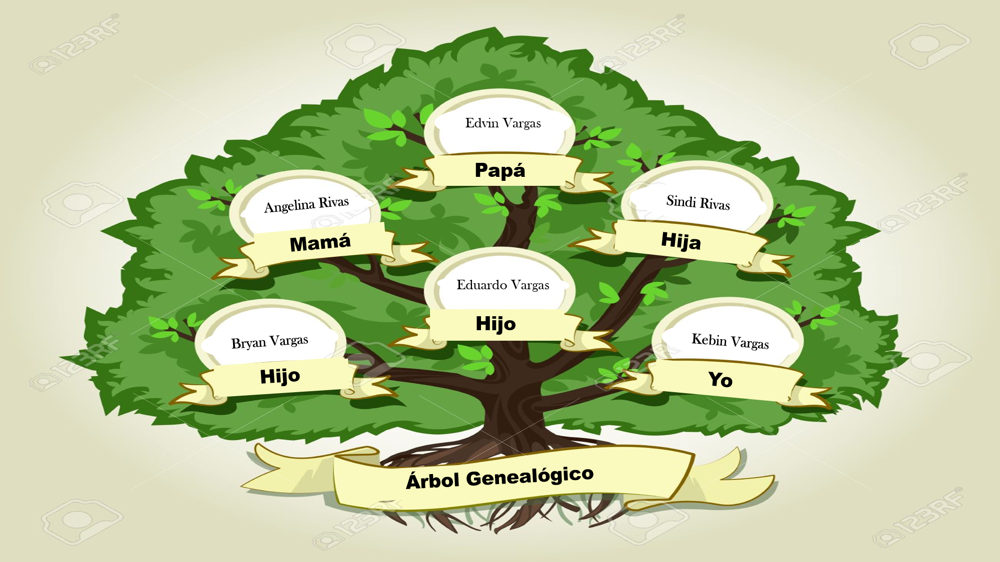
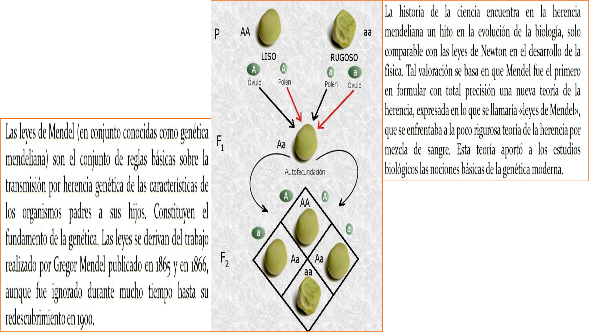

<ion-view view-title="SteekApp">
	<ion-content class="block2">
		<h3 class="second">Transporte de Energia</h3>
		<iframe width="100%" height="220" src="https://www.youtube.com/embed/DqSrZaXVSx8" frameborder="0" allow="accelerometer; autoplay; encrypted-media; gyroscope; picture-in-picture" allowfullscreen></iframe><br>
		<h3 class="second">Transporte de Nutrientes</h3>
		<iframe width="100%" height="220" src="https://www.youtube.com/embed/Qd5yA3UiQ2o" frameborder="0" allow="accelerometer; autoplay; encrypted-media; gyroscope; picture-in-picture" allowfullscreen></iframe><br>
		<h3 class="second">Ósmosis y Difusión</h3>
		<iframe width="100%" height="220" src="https://www.youtube.com/embed/N2vbhD7Mjso" frameborder="0" allow="accelerometer; autoplay; encrypted-media; gyroscope; picture-in-picture" allowfullscreen></iframe><br>
		<h3 class="second">Transporte Activo</h3>
		<iframe width="100%" height="220" src="https://www.youtube.com/embed/wGbMLlZxX_o" frameborder="0" allow="accelerometer; autoplay; encrypted-media; gyroscope; picture-in-picture" allowfullscreen></iframe><br>
		<h3 class="second">Transporte Pasivo</h3>
		<iframe width="100%" height="220" src="https://www.youtube.com/embed/X4cC5T72rlA" frameborder="0" allow="accelerometer; autoplay; encrypted-media; gyroscope; picture-in-picture" allowfullscreen></iframe><br>
		<h3 class="second">Membrana Plasmática "Estructura"</h3>
		<iframe width="100%" height="220" src="https://www.youtube.com/embed/eFnO2xMmuYs" frameborder="0" allow="accelerometer; autoplay; encrypted-media; gyroscope; picture-in-picture" allowfullscreen></iframe><br>
		<hr><br><h3 class="second">Árbol Genealógico</h3>
		<!--Archivo pendiente sobre el arbol genealogico-->
		
		<hr><br>
		<h3 class="second">Infografia</h3>
		<hr><br>
	</ion-content>
</ion-view>
